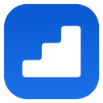

Willkommen bei Stagio
Wechsle mit einem Klick zwischen Lokal, Test und Live, teste APIs und sieh die Fehler deiner Seiten.
1
Icon anheften
Klick oben rechts in Chrome auf das Puzzle-Symbol und hefte Stagio an. So ist das Popup immer einen Klick entfernt.
2
Erstes Projekt anlegen
Ein Projekt ist eine Website mit ihren Umgebungen. Eine Zeile pro Umgebung, der Name ist frei wählbar.
3
Loslegen
SwitcherGleiche Seite in einer anderen Umgebung öffnen, Seiten wie das Backoffice mit einem Klick.
API-TesterRequests senden wie in Swagger, OpenAPI, cURL, Postman und HAR importieren.
LogsJS-Fehler und fehlgeschlagene Requests deiner Seiten, die Anzahl steht auf dem Icon.
Branchesgit und Mercurial pro Projekt. Optional, braucht ein kleines Hilfsprogramm.
Alle Daten bleiben auf deinem Computer. Stagio sendet nichts an andere Server.
Stagio ist kostenlos. ☕ Unterstützen · stagio.dev